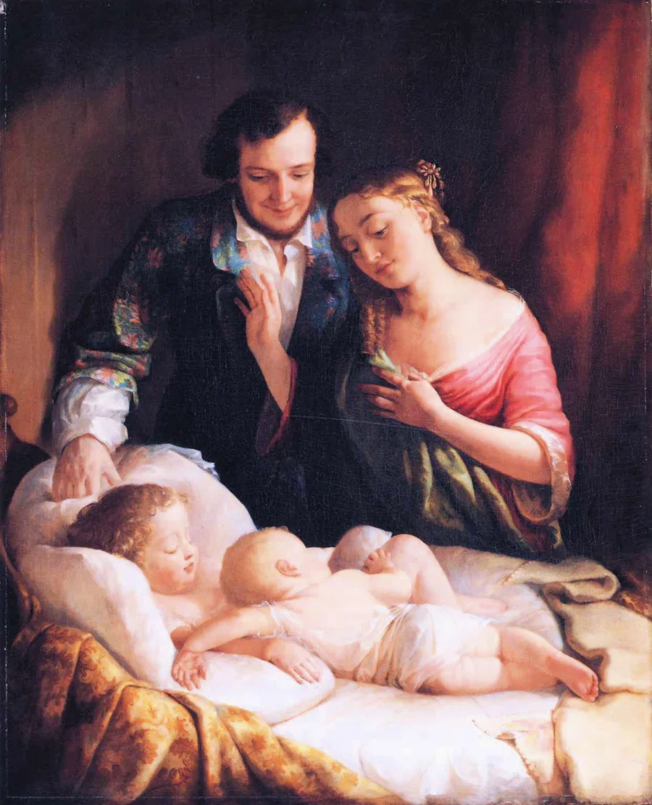
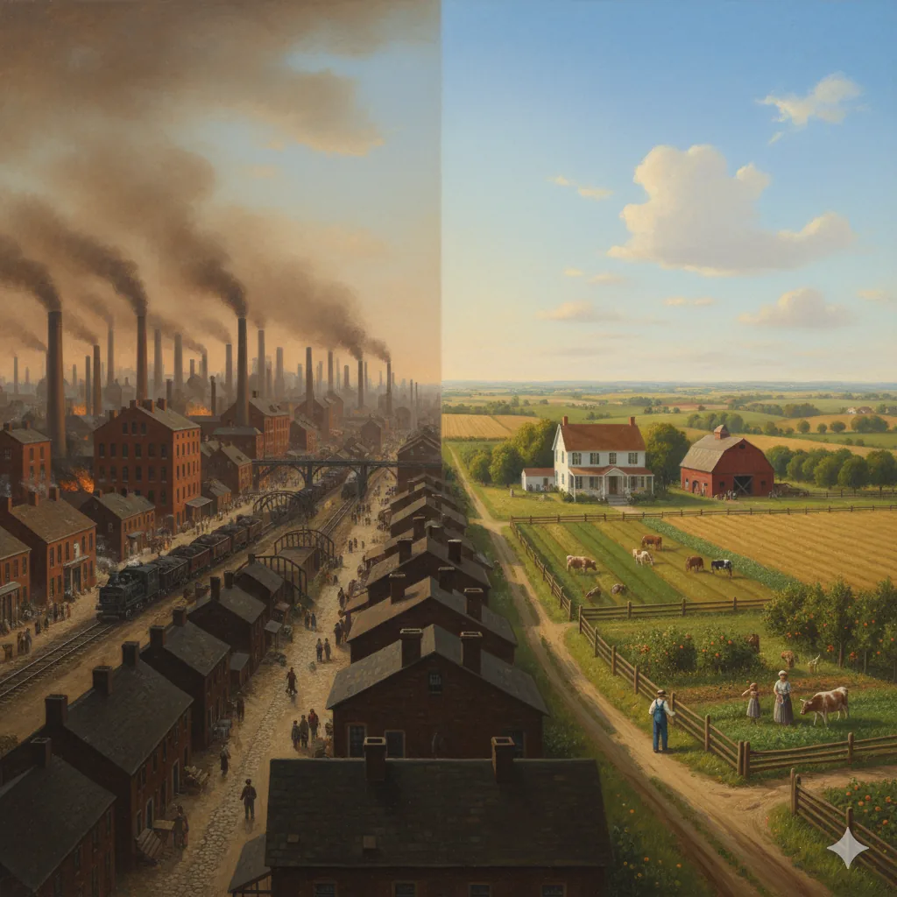
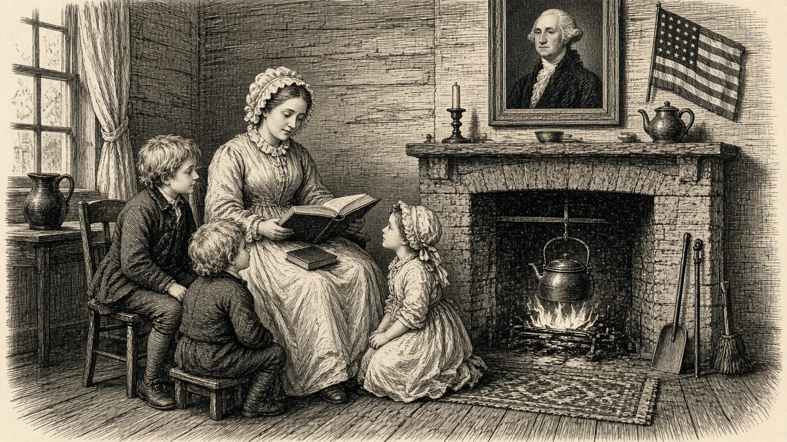
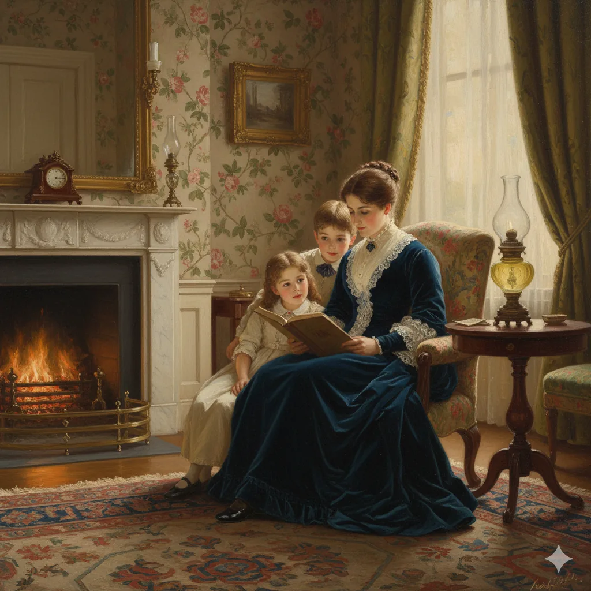
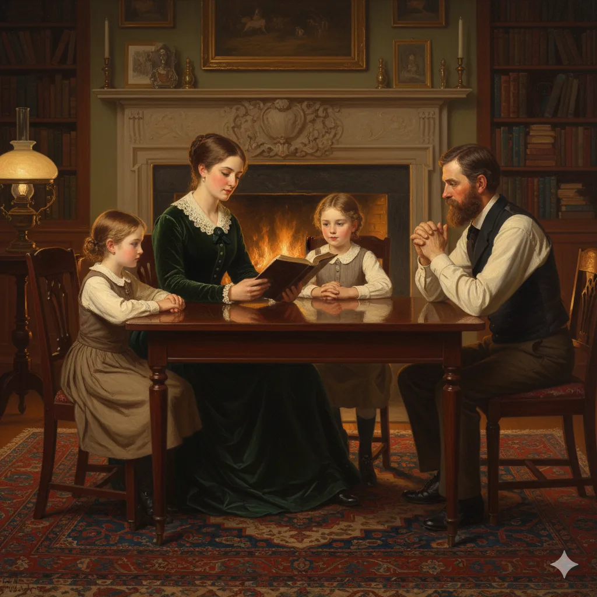
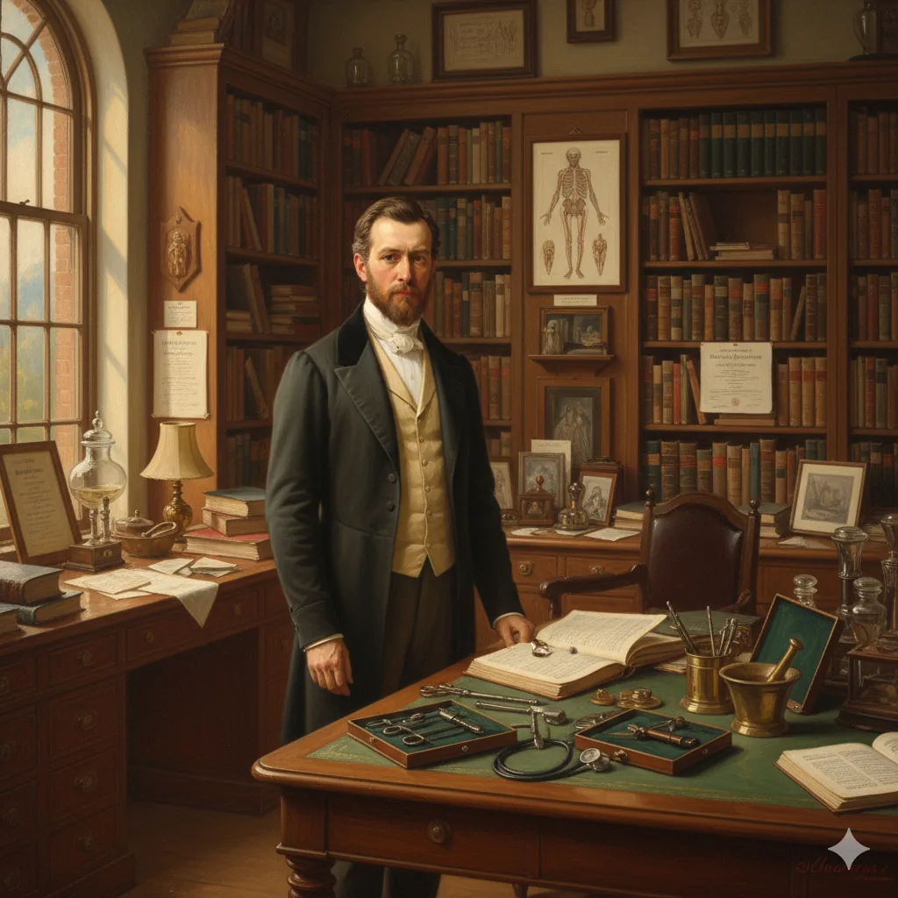
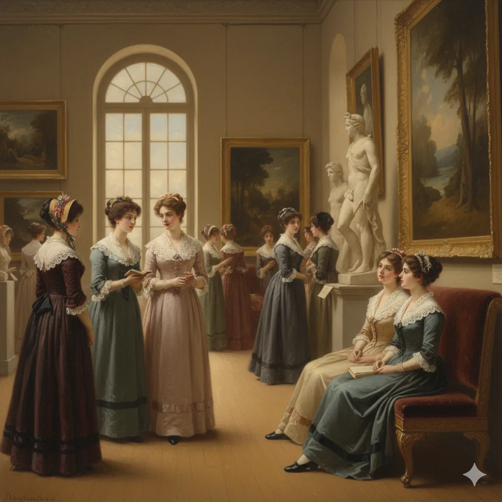
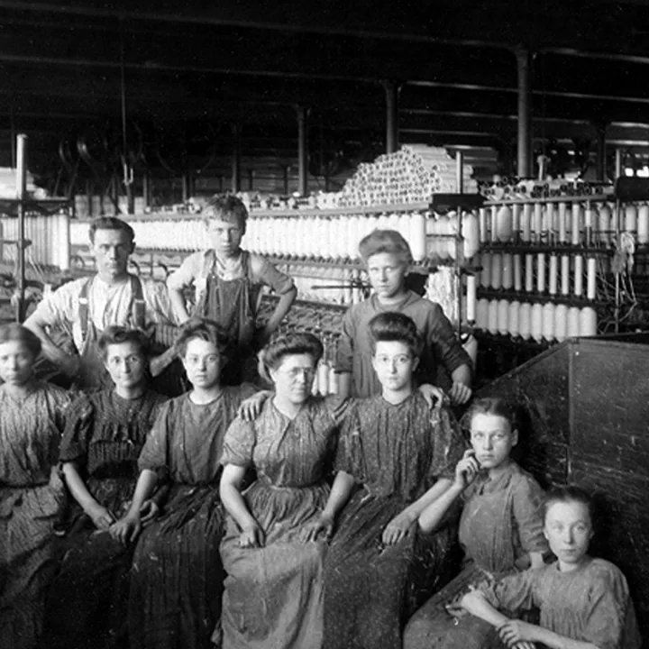
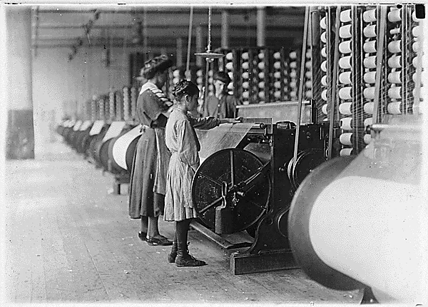
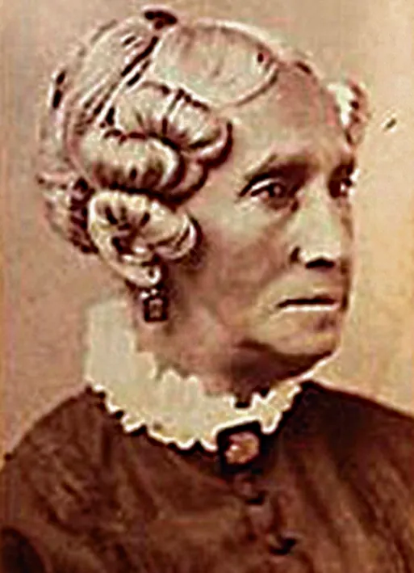

Work, Home, and Respectability in the North, 1815–1850
Lecture 3
HIST 101: American History to 1865

🔍 click to enlarge
Defined not just by wealth but by values: self-discipline, moral improvement, economic ambition
New England’s outsized role: exported Yankee work ethic, moral reform, and self-improvement across the North
Self-ownership and freedom of action and ambition
Equality of opportunity, not outcome
Fundamental to American capitalism and individualism, but in tension with communal obligation and structural inequality
New Question: What do you do when you’re not working?
Civic duty: raising virtuous, educated sons for the republic

Industrialization and the Market Revolution divided public (male) and private (female) realms
Four cardinal virtues:
Women as moral anchors amid market chaos: guardians of virtue, not participants in politics or commerce

Contribution to Republican Values: elevated women’s moral influence; stable families supporting evangelical reform


Middle-class women: powerful symbols of moral refinement

Respectable recreation fused class aspiration with moral performance, on public display
Class, Race, and Regional Realities
A middle-class ideal: reflected white, middle-class, northern women; required leisure, literacy, and financial stability, the privileges of class


The Cult of Domesticity was class-specific, but the virtues it promoted were more universal
“A little learning is a dangerous thing;
Drink deep, or taste not the Pierian spring.”
— Alexander Pope, An Essay on Criticism (1711)
Forging Identity Outside the Cult of Domesticity
Outside the “separate spheres” ideal, yet forged their own respectability and leadership: economic necessity plus moral authority
